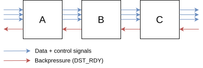
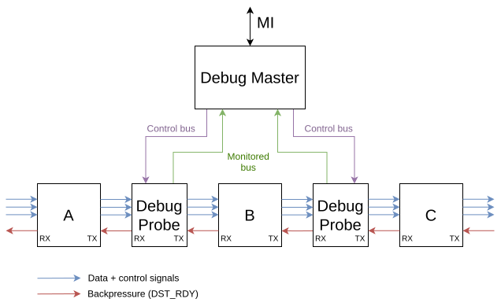
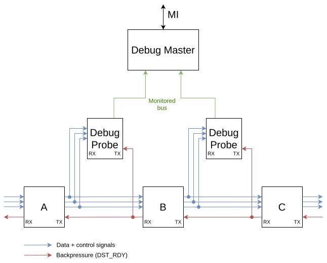

Streaming Debug
This component is useful for debugging streaming buses (typically MFB and MVB in the NDK). It can count the number of processed words and packets and indicate a bottleneck where the throughput is being decreased.
The whole Streaming Debug system consists of two parts: STREAMING_DEBUG_MASTER and STREAMING_DEBUG_PROBE. Furthermore, the Probe has three versions:
classic (entity STREAMING_DEBUG_PROBE)
inverted [1] (entity STREAMING_DEBUG_PROBE_N)
MFB (entity STREAMING_DEBUG_PROBE_MFB); often also used for MVB
The Debug Probes are usually placed between two neighboring components in a stream pipeline. For example, imagine a pipeline consisting of components A –> B –> C, as in the following figure.
{kind=link}

An example of a stream pipeline where component A sends data to comp B (and B to C) and where B uses backpressure (DST_RDY) to pause data from A (and C to B).
In this case, Probes can be placed between the components as well as on the beginning and end of the pipeline. All Probes should be connected to the same Debug Master (for simplicity and saving FPGA resources). This is displayed in the following diagram.
{kind=link}

A pipeline with integrated Debug Probes and Master. Control signals such as Data Valid (SRC_RDY), Start-Of-Packet (SOP), End-Of-Packet (EOP), and backpressure (DST_RDY) all flow through the Probe. This is the intended manner in which the probes should be integrated into a design to use all of its features. Also, the “Bus Control” (see section Bus control) signals are connected from the Master to the Probe.
However, we often do not need to use features to stop (block) or discard (drop) the flowing traffic. In that case, the “Bus Control” signals and some other connections can be omitted. The typical connection of the Debug Probes is shown in the following diagram.
{kind=link}

Common connection of the Probes in the NDK designs - Bus Control is not used (see section Bus control).
Debug Master
The Debug Master component is connected to the MI bus and one or more Probes. It accepts commands through the MI bus to control the Probes or read statistical data. The module contains counters that increment according to signals received from each Probe (one counter - of each type - per Probe).
Counters
Six types of counters are available in the Debug Master for each Debug Probe. Each can be disabled/enabled by generic parameters: “E” or “e” to “enable”; anything else will translate as “disable”.
COUNTER_WORD: number of valid data words - clock cycles when both SRC_RDY and DST_RDY were asserted.
COUNTER_WAIT: number of clock cycles when neither SRC_RDY nor DST_RDY were asserted.
COUNTER_DST_HOLD: number of clock cycles when SRC_RDY was asserted and DST_RDY deasserted (the next component in the pipeline could not process new data).
COUNTER_SRC_HOLD: number of clock cycles when SRC_RDY was deasserted and DST_RDY asserted (the previous component in the pipeline did not output valid data).
COUNTER_SOP: number of transaction starts (valid SOPs/SOFs).
COUNTER_EOP: number of transaction ends (valid SOPs/SOFs).
Debug Probes
Each Probe has three interfaces:
RX - connect signals on the interface of the previous component in the pipeline. In the A –> B –> C example at the top, this would be the output (TX) interface of component A for Probe placed between comps A and B.
TX - connect signals on the interface of the next component in the pipeline. In the A –> B –> C example at the top, this would be the input (RX) interface of component B for Probe placed between comps A and B.
DEBUG - connect to the Master’s DEBUG interface.
See Probe connections in the second diagram (or the third).
The Debug interface
When Bus Control is enabled, the BLOCK and DROP signals can modify the traffic flow (see the following section). Other signals on this interface are the monitored signals from the Probe that increment the Master’s counters.
Each Probe is identified by:
four-letter user-defined string (generic parameter of the component),
an automatically assigned ID (port number on which it is connected to the Master)
Bus control
When this “advanced” feature is enabled, the user can halt or discard the traffic flowing through a selected Probe. To utilize this feature, the Probe must be inserted into the pipeline as shown in the second diagram. And for each Probe, it has to be enabled using the BUS_CONTROL generic parameter. Appropriate MI commands to Debug Master are translated to the DEBUG_BLOCK and DEBUG_DROP interface signals. This sets the requested Probe to:
Halt the traffic (when the DEBUG_BLOCK signal asserts). The Probe then pauses the incoming traffic by deasserting RX_DST_RDY and invalidating the output by deasserting TX_SRC_RDY.
Discard the traffic (when the DEBUG_DROP signal asserts; has priority over the DEBUG_BLOCK signal). The Probe accepts all incoming traffic by asserting RX_DST_RDY and invalidate the output by deasserting TX_SRC_RDY.
Usage
Use the nfb-busdebugctl tool for easy control of the whole Streaming Debug system. For more info, see the tool’s documentation.
Entities
- ENTITY STREAMING_DEBUG_MASTER IS
- Generics
PortsGeneric
Type
Default
Description
CONNECTED_PROBES
integer
4
Number of connected probes.
REGIONS
natural
1
Number of MFB regions.
DEBUG_ENABLED
boolean
false
Master debuging enable switch. True means full architecture implementation, false means empty architecture implementation.
PROBE_ENABLED
string
“EEEE”
Selective enabling of monitoring of connected probes when master enable is true. Character ‘E’ or ‘e’ means enabled, each other character means disabled. String is red from left to right, one character for each interface numbered from 0.
COUNTER_WORD
string
“EEEE”
Should counter of data words be available?
COUNTER_WAIT
string
“EEEE”
Should counter of waiting cycles (not source nor destination ready) be available?
COUNTER_DST_HOLD
string
“EEEE”
Should counter of cycles when source is ready and destination is not be available?
COUNTER_SRC_HOLD
string
“EEEE”
Should counter of cycles when destination is ready and source is not be available?
COUNTER_SOP
string
“EEEE”
Should counter of started transactions be available?
COUNTER_EOP
string
“EEEE”
Should counter of ended transactions be available?
BUS_CONTROL
string
“EEEE”
Should bus controll functionality be available?
PROBE_NAMES
string
“Int1Int2Int3Int4”
Text identificators for connected probes. Each probe name has precisely 4 characters.
DEBUG_REG
boolean
false
Use internal register on all DEBUG interface signals.
Port
Type
Mode
Description
CLK
std_logic
in
CLOCK and RESET
RESET
std_logic
in
MI_DWR
std_logic_vector(31 downto 0)
in
Input controll MI32 interface
MI_ADDR
std_logic_vector(31 downto 0)
in
MI_RD
std_logic
in
MI_WR
std_logic
in
MI_BE
std_logic_vector(3 downto 0)
in
MI_DRD
std_logic_vector(31 downto 0)
out
MI_ARDY
std_logic
out
MI_DRDY
std_logic
out
DEBUG_BLOCK
std_logic_vector(CONNECTED_PROBES-1 downto 0)
out
Multi-interface for connected streaming interfaces
DEBUG_DROP
std_logic_vector(CONNECTED_PROBES-1 downto 0)
out
DEBUG_SRC_RDY
std_logic_vector(CONNECTED_PROBES-1 downto 0)
in
DEBUG_DST_RDY
std_logic_vector(CONNECTED_PROBES-1 downto 0)
in
DEBUG_SOP
std_logic_vector(CONNECTED_PROBES*REGIONS-1 downto 0)
in
DEBUG_EOP
std_logic_vector(CONNECTED_PROBES*REGIONS-1 downto 0)
in
- ENTITY STREAMING_DEBUG_PROBE_MFB IS
- Generics
PortsGeneric
Type
Default
Description
REGIONS
natural
4
Number of MFB regions.
Port
Type
Mode
Description
=====
Input interface
=====
=====
RX_SRC_RDY
std_logic
in
RX_DST_RDY
std_logic
out
RX_SOF
std_logic_vector(REGIONS-1 downto 0)
in
RX_EOF
std_logic_vector(REGIONS-1 downto 0)
in
=====
Output interface
=====
=====
TX_SRC_RDY
std_logic
out
TX_DST_RDY
std_logic
in
TX_SOF
std_logic_vector(REGIONS-1 downto 0)
out
TX_EOF
std_logic_vector(REGIONS-1 downto 0)
out
=====
Debuging interface
=====
=====
DEBUG_BLOCK
std_logic
in
blocks data words on pipe’s input interface
DEBUG_DROP
std_logic
in
drops data words on pipe’s input interface (higher priority than BLOCK)
DEBUG_SRC_RDY
std_logic
out
source ready on pipe’s input interface
DEBUG_DST_RDY
std_logic
out
destination ready on pipe’s input interface
DEBUG_SOF
std_logic_vector(REGIONS-1 downto 0)
out
start of transaction on pipe’s input interface
DEBUG_EOF
std_logic_vector(REGIONS-1 downto 0)
out
end of transaction on pipe’s input interface
Footnotes